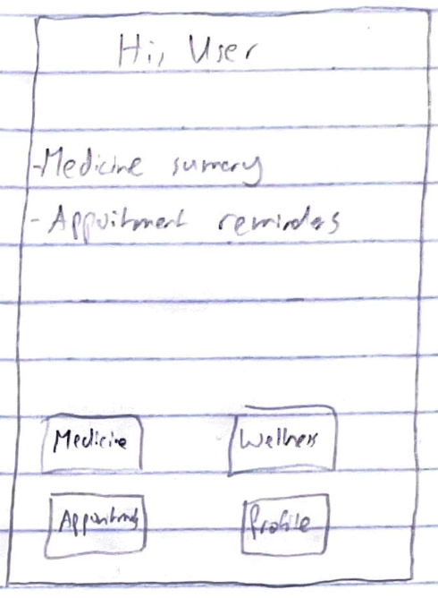
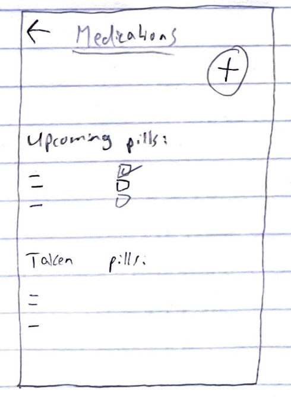

Wireframes & Prototype



A UX Case Study by Mickel Samuel
Key findings from surveys (30 participants):
82% use manual methods, while 18% use mobile apps.
65% forget doses frequently, while 10% rarely forget.
48% find apps too complex, while 22% worry about privacy.
Goals: Track insulin doses, message doctors without confusion.
Pain Points: Tech anxiety, forgets refill dates.
Goals: Manage inhaler refills, track pediatrician appointments for his child.
Pain Points: Overwhelmed by multiple apps, needs family sharing.
Goals: Track migraine triggers, set reminders for medication.
Pain Points: Needs quick access during episodes, dislikes complex interfaces.
Mia's journey from symptom tracking to appointment confirmation.
Task: "Schedule a follow-up appointment for March 5th."

Key Challenges: